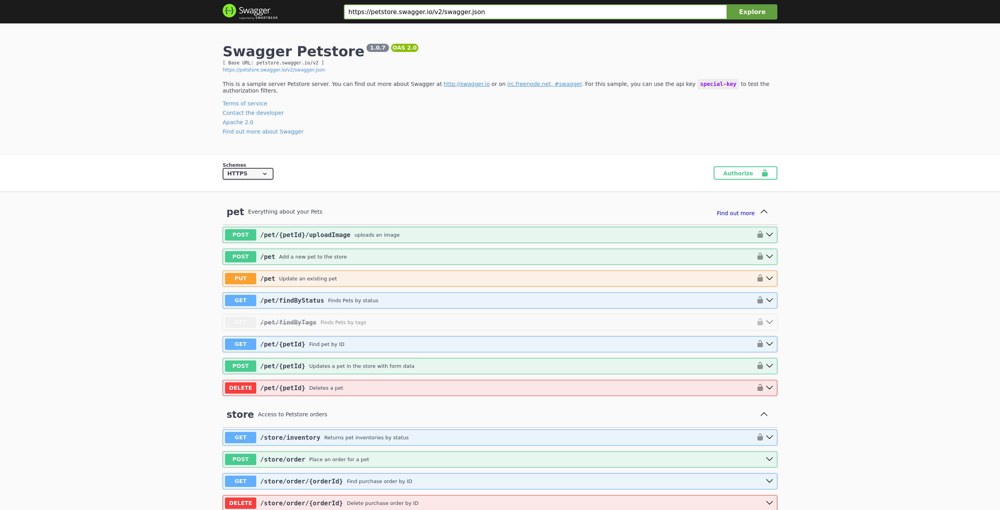
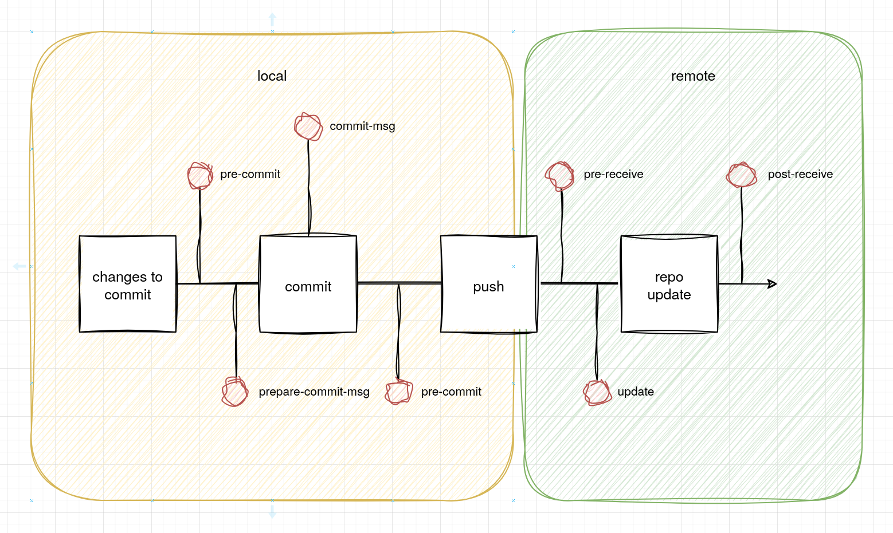

Automatyzacja utrzymania jakości
Projektowanie i programowanie systemów internetowych II
wykład 3 z 8

mgr inż. Krzysztof Rewak
Zakład Informatyki, Wydział Nauk Technicznych i Ekonomicznych
Collegium Witelona Uczelnia Państwowa
Blumilk sp. z o.o.
Agenda
- Cechy dobrego systemu informatycznego
- Narzędzia wspomagające
- Automatyzacja utrzymania jakości kodu
- Podsumowanie
Co to znaczy "dobry" system?
Najważniejsza oczywiście jest odpowiedź na pytanie "czy działa?"
Niestety tak krótkowzroczne podejście może być problematyczne - zarówno dla programistów, którzy kiedyś
będą musieli rozszerzać lub naprawiać system, jak i dla samego zamawiającego, dla którego te zmiany będą
praco- i czasochłonne.
Jak sprawdzić czy system działa?
Testy, testy i testy.
Bez uruchomienia zestawów scenariuszy testów aplikacji nie da się powiedzieć tak naprawdę czy system
poprawnie działa. Oczywiście wiele zależy od jakości tychże testów, ale lepiej mieć małe pokrycie, ale
opisujące najważniejsze funkcjonalności niż kompletny brak testów.
Dobrym pierwszym krokiem w każdym projekcie jest uruchomienie testów zanim się nawet zajrzy do kodu.
Jeżeli już na tym etapie testy nie przechodzą, możemy mieć wątpliwości do tego, co tak naprawdę kryje się
w repozytorium. Jeżeli ich w ogóle nie ma - mamy potwierdzenie, że system nie był budowany na poważnie.
Przeczytaj mnie!
Inną dobrą praktyką jest zamieszczenie pliku
readme.md w głównym katalogu repozytorium.
Oczywiście readme powinno zawierać ogólny opis projektu i instrukcję uruchomienia lokalnego oraz
uruchomienia testów. Bazowe readme frameworka powinno być usunięte w zasadzie przy pierwszym commicie.
Uruchomienie
Bardzo często systemy internetowe potrzebują wielu zależności - zarówno na poziomie usług, jak i
pobieranych paczek. Wszystko, co potrzebne, powinno być udokumentowane jak najdokładniej... albo po prostu
opisane w plikach dockerowych.
Inna dobrą praktyką może być stworzenie skryptu uruchamiającego system.
Dokumentacja REST API
Jeżeli system publikuje REST API, warto dodać do niego dokumentację, aby każdy wiedział jak korzystać ze
wszystkich kolejnych endpointów. Tym bardziej, jeżeli mówimy o kilku rozmawiających ze sobą serwisach
wewnątrz systemu.
Może się zdawać oczywistym, że pod endpoint `POST /logout` należy wysłać token uwierzytelniający w
nagłówku oraz puste ciało, a otrzymamy jako odpowiedź status 200...
A może request przyjmuje więcej nagłówków i w zależności od
Accept-Language dostaniemy różną
odpowiedź? Ale co gdy token jest przeterminowany? Albo użytkownik został usunięty? Z prostego endpointu
zrobi się przynajmniej kilka scenariuszy.
Taka dokumentacja może wyglądać następująco, a budowana jest z...
pliku JSON:

Everything in Its Right Place
Jeżeli korzystamy ze znanego frameworka i celowo naginamy jego konwencje, warto gdzieś to zanotować.
Przykładowo odejście od laravelowych fasad brzmi rozsądnie, ale kłóci się z oficjalnym podejściem
przedstawianym w dokumentacji frameworka. Podobnie rzecz się ma z wykorzystaniem DTO, własnym systemem
warstw abstrakcji i każdą inną tego typu zmianą.
Spacje czy taby?
W sensownie prowadzonym projekcie nie powinno być miejsca na kłótnie o taby i spacje czy klamerki
otwierające metodę w tej lub w nowej linii. Uwspólniony styl programowania powinien dotyczyć wszystkich i
być jasno sprecyzowany, żeby code review nie zajmowało godziny dziennie.
Dlaczego?
"Dobry" system informatyczny powinien być działający, ale także skalowalny i przenoszalny oraz naprawialny
i rozszerzalny.
Spacje czy taby?
Przy większym projekcie sprawdzanie stylu kodu to męczarnia.
Dlatego też większość ekosystemów zbudowanych wokół języków programowania i frameworków webowych
wytworzyła narzędzia do zapewnienia automatycznego sprawdzania i naprawiania stylu kodowania.
Narzędzia takie nazywają się najczęściej linterami lub fixerami.
pep8 --first optparse.py
optparse.py:69:11: E401 multiple imports on one line
optparse.py:77:1: E302 expected 2 blank lines, found 1
optparse.py:88:5: E301 expected 1 blank line, found 0
optparse.py:222:34: W602 deprecated form of raising exception
optparse.py:347:31: E211 whitespace before '('
optparse.py:357:17: E201 whitespace after '{'
optparse.py:472:29: E221 multiple spaces before operator
optparse.py:544:21: W601 .has_key() is deprecated, use 'in'
Co kraj, to obyczaj, dlatego każda technologia ma swoje lintery:
- Python - pep8, Pylint
- JavaScript - ESLint, Prettier
- PHP - PHP-CS-Fixer, Psalm
- C# - natywny
dotnet format
Warsztat
Zobaczmy co może przykładowe narzędzie tej klasy:
PHP-CS-Fixer.
Codestyle, ale i więcej
Część z powyższych narzędzi potrafi nie tylko poprawić odstępy czy ogólny styl, ale także przeprowadzić
statyczną analizę kodu w celu identyfikacji błędów, luk bezpieczeństwa i niezgodności ze standardami
kodowania. Pozwala to wykrywać i naprawiać potencjalne problemy na wczesnym etapie rozwoju oprogramowania.
Warsztat
Zobaczmy co może przykładowe narzędzie tej klasy:
Psalm.
Produktywność vs lenistwo
Korzystanie z runnerów testów czy linterów ułatwia pracę, ale generuje jeden poważny problem: trzeba o tym
pamiętać przy każdym puszczeniem zmian.
Dlatego też warto rozważyć zautomatyzowanie całego procesu, aby ktoś lub coś robili to za nas.
Git Hooks
Jednym z takich rozwiązań jest wykorzystywanie Git Hooków, czyli możliwych do oprogramowania reakcji na rzucane przez Gita zdarzenia.

Git Hooks
Zalety? Łatwe w konfiguracji i działające lokalnie.
Wady? Mogą być trudne w obsłudze, jeżeli środowisko jest zdockeryzowane. Bardzo łatwo je wyłączyć, co niektórych będzie kusiło.
GitHub Actions
Alternatywą może być GitHub Actions, czyli funkcjonalność dostarczana przez GitHub, która polega na umożliwieniu uruchamiania dowolnych skryptów "wewnątrz GitHuba". W bardzo prosty sposób można podpiąć uruchamianie testów czy linterów na zdarzenia takie jak pull request czy push na główny branch.
CI + CD
Dzięki GitHub Actions można tworzyć niestandardowe ciągi zadań za pomocą plików konfiguracyjnych YAML, co umożliwia integrację ciągłą (CI) i ciągłe wdrażanie (CD) bez potrzeby korzystania z zewnętrznych narzędzi. Platforma oferuje również możliwość korzystania z gotowych akcji stworzonych przez społeczność, co przyspiesza proces automatyzacji i ułatwia zarządzanie cyklem życia aplikacji.
Przykład #1
name: Check PR Title
on:
pull_request:
types:
- opened
- edited
- synchronize
- ready_for_review
- reopened
jobs:
check-pr-title:
name: Check PR title
timeout-minutes: 10
if: github.event.pull_request.draft == false
runs-on: ubuntu-22.04
steps:
- uses: blumilksoftware/action-pr-title
Przykład #2
name: Test & lint PHP stuff
on:
pull_request:
# (...)
jobs:
test-and-lint-php:
name: Test & lint PHP stuff
timeout-minutes: 10
if: github.event.pull_request.draft == false
runs-on: ubuntu-22.04
services:
# (...)
steps:
- uses: actions/checkout@d632683dd7b4114ad314bca15554477dd762a938 # v4.2.0
- name: Validate composer.json and composer.lock
run: composer validate
- name: Install Composer dependencies
run: composer install --prefer-dist --no-interaction --no-suggest
- name: Run PHP linter
run: composer cs
- name: Run PHP static analysis
run: composer analyse
- name: Execute tests
run: php artisan test --env=ci
Przykład #3
name: Build and deploy
on:
push:
branches:
- master
schedule:
- cron: "0 8 1 * *"
jobs:
deploy:
runs-on: ubuntu-20.04
steps:
- name: Setup Node
uses: actions/setup-node@v3
- name: Install and build frontend
run: |
npm install
npm run-script build
- name: Setup PHP
uses: shivammathur/setup-php
- name: Install and build backend
run: |
composer install
composer build
- name: Deploy
uses: JamesIves/github-pages-deploy-action
Alternatywy
Istnieje wiele innych alternatyw (między innymi popularny Gitlab CI/CD, narzędzia takie jak Jenkins, Travis czy CircleCI), ale wszystkie działają w miarę podobnie.
Highlights
- testowanie (automatyczne!) jest niezbędne do zapewnienia poprawności działania systemu
- dokumentacja ułatwia uruchomienie i rozwój projektu
- narzędzia takie jak lintery, formatery i fixery automatyzują utrzymanie jakości kodu
- automatyzacja procesów zwiększa efektywność
- wykorzystanie platform takich jak GitHub Actions umożliwia ciągłą integrację i wdrażanie
- "dobry" system powinien być nie tylko działający, ale także skalowalny, przenośny, naprawialny i rozszerzalny
Źródła i do dalszego poczytania
- konfigurator PHP-CS-Fixer
- codestyle wykorzystywany w Blumilku
- ESLint - strona główna
- Git Hooks
- przykładowe GitHub Actions